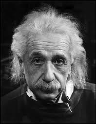

Реферат
Альберт Эйнштейн
(1879-1955)

ВВЕДЕНИЕ
Когда посетители знаменитого учёного видели в его домашнем кабинете небольшой телескоп, они не могли не спросить, для чего он предназначен. Эйнштейн обычно отвечал: «Нет, это не для звёзд. Телескоп принадлежал бакалейщику, ранее жившему здесь. Приятная вещь. Я его берегу, как игрушку». Конечно, Эйнштейну доводилось бывать на крупнейших обсерваториях мира и видеть лучшие телескопы, но его «инструментом» было теоретическое мышление, а не астрономическая труба. Альберт Эйнштейн - один из величайших мыслителей всех времён.
В детские годы будущая гениальность Эйнштейна внешне никак не проявлялась. Альберт рос тихим, замкнутым ребёнком; он редко играл с другими детьми, долго учился говорить и в семилетнем возрасте мог лишь повторять короткие фразы. Но ещё в пятилетнем возрасте на него произвёл неизгладимое впечатление компас, подаренный ему отцом. Способность стрелки показывать направление на север и на юг заворожило его своей загадочностью и необъяснимостью на основе обыденных представлений. В 12 лет он был пленён красотой математической логики, прочитав случайно попавшуюся ему книгу по евклидовой геометрии. Способности к логическому мышлению Альберт унаследовал от отца, а склонность к музыке - от матери. Со временем он научился неплохо играть на рояле и на скрипке.
ДЕТСТВО И ЮНОСТЬ
Немецко-швейцарско-американский физик Альберт Эйнштейн родился в Ульме, средневековом городе королевства Вюртемберг (ныне земля Баден-Вюртемберг в Германии), в семье Германа Эйнштейна и Паулины Эйнштейн, урожденной Кох. Вырос он в Мюнхене, где у его отца и дяди был небольшой электрохимический завод. Эйнштейн был тихим, рассеянным мальчиком, который питал склонность к математике, но терпеть не мог школу с ее механической зубрежкой и казарменной дисциплиной. В унылые годы, проведенные в мюнхенской гимназии Луитпольда, Эйнштейн самостоятельно читал книги по философии, математике, научно-популярную литературу. Большое впечатление произвела на него идея о космическом порядке. Как-то в гимназии к Альберту подошёл классный наставник и сказал: «Мне хотелось бы, чтобы Вы покинули нашу школу!». Изумлённый Альберт ответил: «Но ведь я ни в чём не провинился!». «Да, это верно, - перебил его учитель, - но одного Вашего присутствия в классе достаточно, чтобы полностью подорвать уважение к учителям». После того как дела отца в 1895 г. пришли в упадок, семья переселилась в Милан. Эйнштейн остался в Мюнхене, но вскоре оставил гимназию, так и не получив аттестата, и присоединился к своим родным. Они не были очень обрадованы, когда сын прибыл к ним без аттестата о среднем образовании и даже без паспорта. Шестнадцатилетнего Эйнштейна поразила та атмосфера свободы и культуры, которую он нашел в Италии.
Несмотря на глубокие познания в математике и физике, приобретенные главным образом путем самообразования, и не по возрасту самостоятельное мышление, Эйнштейн не выбрал себе профессию. Отец настаивал на том, чтобы сын избрал инженерное поприще и в будущем смог поправить шаткое финансовое положение семьи. Эйнштейн попытался сдать вступительные экзамены в Федеральный технологический институт в Цюрихе, для поступления в который не требовалось свидетельства об окончании средней школы. Не обладая достаточной подготовкой, он провалился на экзаменах, но директор училища, оценив математические способности Эйнштейна, направил его в Аарау, в двадцати милях к западу от Цюриха, чтобы тот закончил там гимназию. Через год, летом 1896 г., Эйнштейн успешно выдержал вступительные экзамены в Федеральный технологический институт. В Аарау Эйнштейн расцвел, наслаждаясь тесным контактом с учителями и либеральным духом, царившим в гимназии. Все прежнее вызывало у него настолько глубокое неприятие, что он подал официальное прошение о выходе из германского подданства, на что его отец согласился весьма неохотно.
Нельзя не сказать ещё об одном увлечении Эйнштейна - музыке. Он охотно участвовал и в домашнем музицировании, и в любительских концертах. В студенческие годы он стал хорошим скрипачом. Он играл Генделя и Брамса, Шумана и Шуберта, но его любимыми композиторами всегда оставались Бах и Моцарт. Именно в их произведениях его покоряла та прозрачность и гармония, которую он искал, строя свои теории Вселенной. В Цюрихе Эйнштейн изучал физику, больше полагаясь на самостоятельное чтение, чем на обязательные курсы. Сначала он намеревался преподавать физику, но после окончания Федерального института в 1901 г. и получения швейцарского гражданства не смог найти постоянной работы.
НАЧАЛО САМОСТОЯТЕЛЬНЫХ ИССЛЕДОВАНИЙ
В 1902 г. Эйнштейн стал экспертом Швейцарского патентного бюро в Берне, в котором прослужил семь лет. Для него это были счастливые и продуктивные годы. Он опубликовал одну работу о капиллярности (о том, что может произойти с поверхностью жидкости, если ее заключить в узкую трубку). Хотя жалованья едва хватало, работа в патентном бюро не была особенно обременительной и оставляла Эйнштейну достаточно сил и времени для теоретических исследований. Его первые работы были посвящены силам взаимодействия между молекулами и приложениям статистической термодинамики.
ОСНОВНЫЕ ДОСТИЖЕНИЯ ЭЙНШТЕЙНА В НАУКЕ
Итак, основными достижениями Эйнштейна, его вкладом в развитие современной физики, являются:
- Значительна роль Эйнштейна и в создании квантовой теории. Если М. Планк квантовал лишь энергию материального осциллятора, то Эйнштейн ввел в 1905 году представление о дискретной, квантовой структуре самого светового излучения, рассматривая последнее как поток квантов света, или фотонов (фотонная теория света). Таким образом, Эйнштейну принадлежит теоретическое открытие фотона, экспериментально обнаруженного в 1922 году А. Комптоном. Исходя из квантовой теории света, объяснил такие явления, как фотоэффект (закон Эйнштейна для фотоэффекта), правило Стокса для флюоресценции, фотоионизацию и др., которые не могла объяснить электромагнитная теория света. За эти исследования в 1921 году ученому была присуждена Нобелевская премия по физике. В 1907 году распространил идеи квантовой теории на физические процессы, непосредственно не связанные со светом. В частности, рассмотрев тепловые колебания атомов в твердом теле и использовав идеи квантовой теории, объяснил уменьшение теплоемкости твердых тел при понижении температуры, разработав первую квантовую теорию теплоемкости твердых тел.
- В 1909 году впервые рассмотрел корпускулярно-волновой дуализм для излучения, а также флуктуации энергии равновесного излучения, получив формулу для флуктуаций энергии.
- В 1912 году установил основной закон фотохимии: каждый поглощенный фотон вызывает одну элементарную фотореакцию (закон Эйнштейна).
Литература
narod.ru